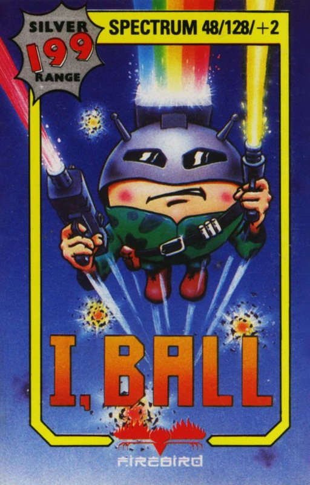
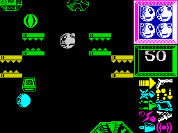
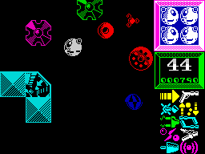
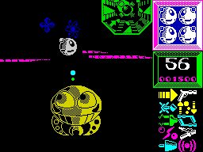

I, Ball


{kind=link}

| Publisher: | Firebird |
| Price: | £1.99 |
| Year: | 1987 |
| Source: | CRASH, Issue 39 |

You have entered the strange and peculiar space-world of the Balls. In this two-dimensional place live a race of multi-coloured ball-people, quite content to bounce from day to day. But all is not well in this haven of rotundity. The evil Terry Ball has captured Lover Ball, Eddy Ball, Glowball, and No Ball and is threatening to deflate them. In fact the only Ballboy left around is I, Ball, and he alone can save his compatriots from puncture.

To do so there are 16 screens to negotiate, each made up of an obstacle course of metallic denture sets, angular metallic structures, blocks arranged in steps and rotating crosses. As I, Ball picks his way through a world resembling a lunatic scrap-metal merchant’s yard, he’s attacked and bombarded by lethal devices unleashed by the evil Mr Ball — micro wave ovens, crabs, roulette wheels and Polo mints come after him thick and fast. At first some of these devices present no danger, but soon they lose their benevolence and become lethal. Now, failure to avoid or destroy them means I, Ball loses a life with every contact.
I, Ball is a resilient little bouncer though, blessed with four lives with which to rescue his friends. And for defence there’s a bubble-gun that sprays opponents with destructive force. However it only blows bubbles vertically, making I, Ball vulnerable to attack from devices that follow like evil puppy-dogs in his wake. The gun overheats with prolonged use and has to cool down before it fires effectively again.

back to me-a-he-he...” (with thanks to
Kim Wilde’s dad).
On occasions a chance to acquire a power disc is presented. By touching a disc I, Ball can increase his range of weapons and abilities — turbo boost allows greater movement speed through a section, while single- and twin- lasers shoot attackers to the sides. Not only weapons, but extra scores and extended time are awarded when a power disc is taken. A status panel shows which weapons are currently in I, Ball’s possession. Unfortunately, power discs can be destroyed by the bubble-gun, and when that happens, the weapon or feature it offers is also lost. Some power discs are faulty, picking one up means that the last gathered weapon is lost.
The computer gives verbal encouragement, throaty congratulations greet each new level achieved, and rasping commiserations blast each loss of life. I, Ball’s friends are imprisoned at regular intervals, simply reaching the correct level ensures their release. But speed is essential if he’s to get through each section before the countdown runs to zero.
CRITICISM

defeat the evil Terry Ball
“It’s hard, very hard, but I, Ball is immensely enjoyable. It’s almost like a vertically scrolling version of Nemesis in the way that your armoury is built up as the game progresses. Graphically very detailed, every character has its own cute features, and the animation, which is some of the smoothest I’ve seen for a long time, sets them off magnificently. The speech, which is quite recognisable, is best heard through an amplifier as the old squeaker muffles it somewhat. Simply, I, Ball is a fast, furious and highly addictive game that is well worth two quid of anyone’s money.”
RICHARD
“Well, well, well, what a fine little game this is. Although highly-coloured, the excellent graphics suffer hardly any attribute clash, and the scrolling is almost perfect. Sound is marvellous, with a quite bearable tune on the title, jazzy FX and some nifty speech (surely that isn’t the legendary Fuigey who’s been digitised)?! It undoubtedly becomes more fun when you get loads of add-ons for your ball, but even with the rock-bottom turbo-boost (even without it!), I, Ball is a great game, full of playability and addictiveness, and one that improves as you get better at it; there are some REALLY frustrating layouts on the higher levels. For the standard Firebird budget price, it’s probably the best value game I’ve played this month.”
MIKE
“Despite the overly cute scenario and the distinct lack of any instructions I, Ball has got me hooked and I can’t see myself putting it away for a long while. At first the action is too fast, so it’s a bit confusing, but once you’ve got the hang of how everything on screen behaves, it all becomes fairly straightforward. The graphics are excellent, each character is large, colourful and well defined and the background scrolls smoothly. The sound is also very good; the ace tune on the title screen is bettered by the astounding effects and speech during the game. For two quid this is a steal — go geddit!”
BEN
COMMENTS
| Control keys: | Z/X left/right, O/K up/down, P to fire |
| Joystick: | Kempston, Interface 2 |
| Use of colour: | Excellent |
| Graphics: | Large, well-defined and smooth |
| Sound: | Good tunes and spot FX, recognisable speech |
| Skill levels: | One |
| Screens: | 16 stages |
| General rating: | A great little game with plenty of lasting appeal. |
| Presentation: | 87% |
| Graphics: | 86% |
| Playability: | 86% |
| Addictive qualities: | 89% |
| Value for money: | 93% |
| Overall: | 90% |